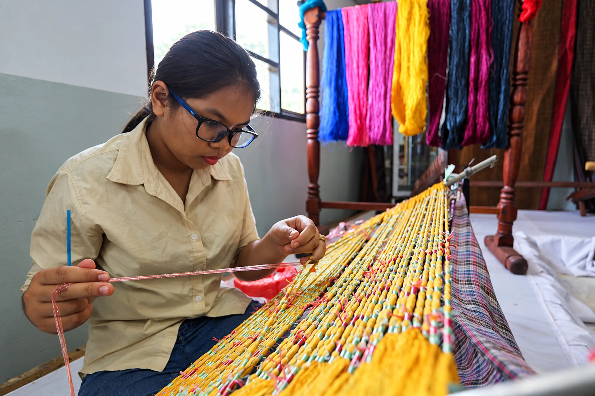

![Inthanin Coffee]()
![ตำมา-ชาติ]()
![ทำมา-ชาติ เฮือนสเตย์]()
![ทำมา-ชาติ ผจญภัย]()

ภาพต้นฉบับ Nation Photo · ปรับความละเอียด 4Kของดีชัยภูมิ · บ้านเขว้า
ผ้าไหมบ้านเขว้า งานฝีมือที่ยังทอจริง
ชาวบ้านเขว้าสืบทอดการทอผ้าไหมมัดหมี่มาเกือบ 200 ปี ตั้งแต่การสาวไหม มัดลาย ย้อมสี จนถึงทอด้วยกี่ทีละเส้น ลายหมี่คั่นขอนารีจึงไม่ใช่แค่ลวดลายสวยงาม แต่เป็นฝีมือและเรื่องราวของคนชัยภูมิที่อยู่ในผ้าทุกผืน